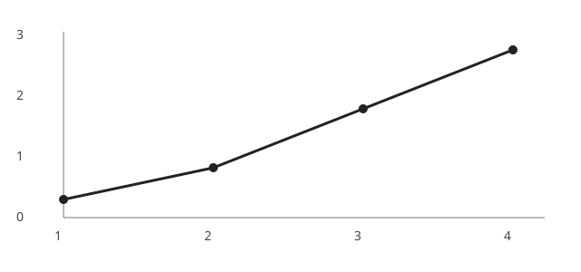

Example post: math and a figure
This page is here only as a template. MathJax lets you write inline mathematics such as \(L(B)=B\mathbb{Z}^n\), or display mathematics:
\[ \lambda_1(L)=\min_{x\in L\setminus\{0\}} \lVert x\rVert. \]Static SVG figures work directly in GitHub Pages and stay sharp when resized.
